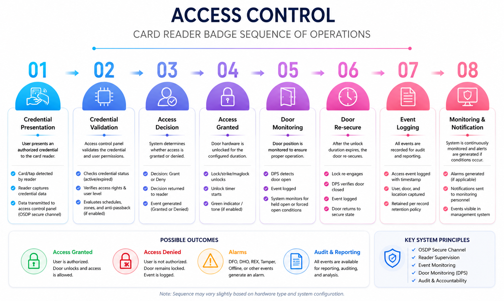

Technical Writing · Physical Security Standards
Access Control Reader Standards & Workflow Documentation
Executive Summary
This project demonstrates my approach to developing technical standards, workflow documentation, governance practices, and supplemental reference materials for enterprise physical security programs. The example focuses on an access control card reader workflow and illustrates how complex system behavior can be translated into clear, repeatable documentation that supports implementation, operations, auditing, and long-term sustainment.
In addition to the technical standard itself, this project includes supplemental visual references, document version control examples, and change-management practices designed to improve consistency across project teams, security operations, workplace technology teams, vendors, and integrators.
The objective is not simply to document a process, but to establish a framework that improves standardization, accountability, training, knowledge transfer, and future scalability within a growing physical security organization.
This project is intended as a representative example of how I would approach technical writing, workflow standardization, governance, and sustainment documentation within a physical security program.
Key Deliverables
- Technical Standard Document
- Access Control Sequence of Operations
- Supplemental Visual Reference Guide
- Document Change Management Process
- Governance and Ownership Framework
- Workflow Standardization Example
Project Overview
What this documentation project is meant to show
Purpose
The purpose of this project is to show how I would write a formal technical standard for a physical security workflow. Instead of only explaining what an access control reader does, the document is structured to show the full operating sequence, expected system behavior, key responsibilities, possible outcomes, and audit considerations.
This is the type of documentation I would create to support a growing security program that needs clear standards and consistent workflow practices.
Intended audience
The document is written for both technical and non-technical stakeholders. A security systems administrator may use it to understand expected access control behavior, while a project manager or business partner may use it to understand process ownership, handoff points, and what should be validated before a project is accepted.
My goal with this type of writing is to make the standard useful across teams, not limited to one technical group.
Program Sustainment
Why technical documentation matters
In physical security, a system can be installed correctly but still become difficult to sustain if standards are unclear. Documentation creates shared expectations for how systems should be designed, configured, validated, maintained, and audited. Without a clear standard, teams may rely on tribal knowledge, inconsistent practices, or individual interpretation.
Strong documentation helps prevent that. It provides a common reference point for project teams, vendors, operations, and leadership. It also makes it easier to onboard new team members, review project quality, investigate issues, and improve standards over time.
This project reflects how I approach documentation from a sustainment mindset. The goal is not just to write a document. The goal is to create a repeatable workflow that supports accountability, long-term ownership, change management, and continuous improvement.
Workflow Practice
How I would structure the standardization process
Define the operational workflow
I would begin by mapping the end-to-end sequence of operations. For an access control reader, that means documenting what happens from the moment a credential is presented to the moment the event is logged and monitored.
Credential Presented → Credential Validated → Access Decision → Access Granted or Denied → Door Monitoring → Event Logging → Monitoring & NotificationIdentify stakeholders and ownership
A technical standard should make ownership clear. In a real environment, Physical Security may own the standard, IT may support infrastructure, vendors may perform installation, and project managers may coordinate delivery. The document should clarify responsibilities so teams know where their handoff points begin and end.
Document expected system behavior
Each step should explain what the system is expected to do. For example, the reader should detect the credential, the controller should validate permissions, the system should return a grant or deny decision, and the monitoring system should retain event history for audit and reporting.
Define acceptable outcomes and exceptions
A useful standard should also explain possible outcomes. Access may be granted, denied, alarmed, or escalated depending on conditions such as expired credentials, invalid access levels, door forced open, door held open, tamper, offline devices, or communication failure.
Create supplemental references
Not every stakeholder will read a full standard before a project meeting. I would include a one-page visual reference to summarize the workflow quickly. This makes the standard easier to understand, easier to share, and easier to reinforce during stakeholder discussions.
Maintain change control
Standards should evolve as systems, risks, and business needs change. I would maintain a changelog to track revisions, ownership, approvals, and implementation status. This helps teams understand what changed, why it changed, and whether the standard is still current.
Technical Standard Document
Access Control Standards PDF
The embedded document below is a sample technical standard. It is intended to demonstrate how I would structure a formal workflow document for physical security operations. The PDF viewer should allow page-by-page viewing, and hyperlinks inside the PDF should remain interactive if supported by the browser's built-in PDF viewer.
I would use this type of document as the primary standard and pair it with supplemental materials such as a changelog and a visual sequence-of-operations reference.
Note: If the embedded PDF does not load on a specific browser, use the Open PDF or Download PDF buttons above.
Supplemental Reference
Card Reader Badge Sequence of Operations
This visual reference is an example of how I would support a technical standard with a quick-reference diagram. The goal is to help stakeholders quickly understand the badge reader workflow without needing to read the entire document first.
A visual like this can be useful during design reviews, vendor coordination meetings, training, troubleshooting, and project closeout discussions.

{kind=link}
Change Control
Example supplemental changelog
For formal standards, I would maintain a changelog as a supplemental item. This helps track version history, document ownership, approvals, and future updates. A changelog is especially important when standards are used across multiple teams or sites because it gives stakeholders visibility into what changed and when.
| Version | Date | Change Summary | Owner | Approval Status |
|---|---|---|---|---|
| 01.00.00 | 2026-06-02 | Initial release of Access Control Reader Standards and Badge Sequence of Operations documentation. | Christopher Leung | Published |
| 01.01.00 | TBD | Added stakeholder feedback, clarified terminology, and expanded event monitoring requirements. | Christopher Leung | Draft |
| 01.02.00 | TBD | Added supplemental visual references and implementation guidance. | Christopher Leung | Draft |
| 02.00.00 | TBD | Major revision incorporating governance updates, sustainment practices, and audit requirements. | Christopher Leung | Future Revision |
Governance
How I would manage ownership and adoption
Documentation ownership
A standard should have a clear owner. That owner is responsible for maintaining the document, reviewing feedback, coordinating approvals, and making sure updates are communicated to impacted teams.
Without ownership, standards can become outdated or inconsistently applied.
Review cadence
I would recommend reviewing standards on a recurring basis, such as annually or after significant system, vendor, or operational changes. This keeps documentation aligned with current technology, current risks, and current business needs.
Stakeholder adoption
A standard is only useful if people understand it and use it. I would support adoption through stakeholder review, training, quick-reference materials, and feedback loops.
Exception handling
In a global environment, not every site may be able to follow the same standard exactly. Any exception should be documented, justified, approved, and reviewed periodically to confirm it is still valid.
Reflection
What this project represents
This project represents how I think about technical writing in a physical security program. Documentation should not simply explain a system after it has already been built. It should help guide design decisions, align stakeholders, support quality assurance, simplify training, and create a sustainable reference for future operations.
My experience in Quality Assurance taught me that standards are most effective when they are clear, measurable, practical, and easy to follow. A good standard helps teams understand what is expected, why it matters, and how to verify that the system is working as intended.
For a sustainment-focused role, this type of documentation is important because it reduces dependency on tribal knowledge and creates a repeatable process that can scale as the organization grows.